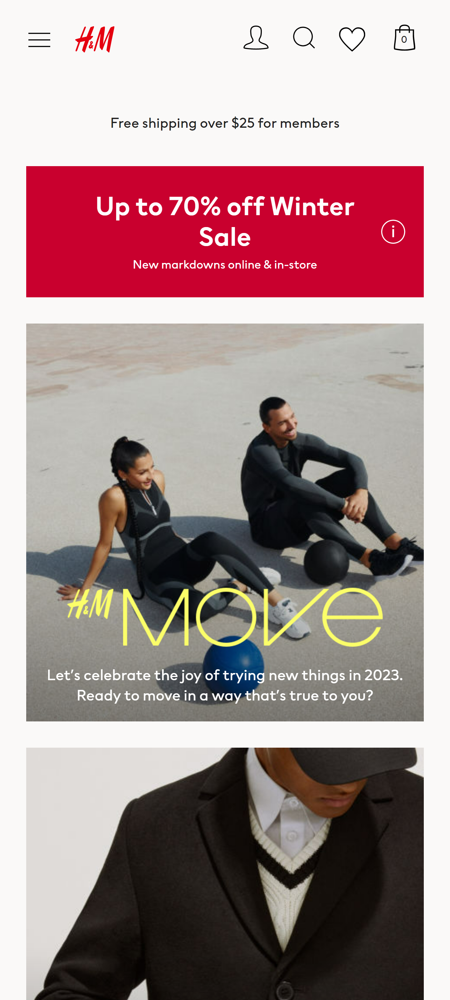

Repetition
Amazon
amazon.com/In this Amazon Home Page, the principle of repetition can be seen in the use of a group of images in a grid and a brief title for each image. Each grid has related content, for example, it says "Shop new innovations" and it has 4 photos (one for "Electronics", "Pets", etc) and the same pattern is repeated throughout the document.
Fitt's Law
Mindset
getmindset.comThis App Home Page follows the Fitt's Law because the buttons to download the app are near the finger and easily and fast accessible to the user. Also it can follow the Hick's Law because the user don't a lot of options to choose from.
Alignment
H&M
hm.com I think the H&M Home Page follows the alignment principle because of the images and descriptions. Almost all the pictures of the body are centered and horizontally aligned; in the nav section, the items are centered and vertically aligned. There is a little section in the middle of the body where the elements are aligned to the left.